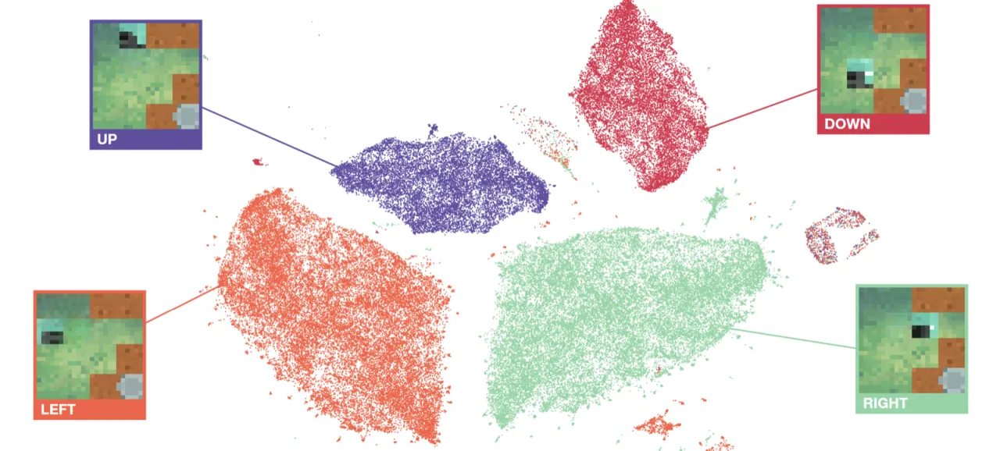
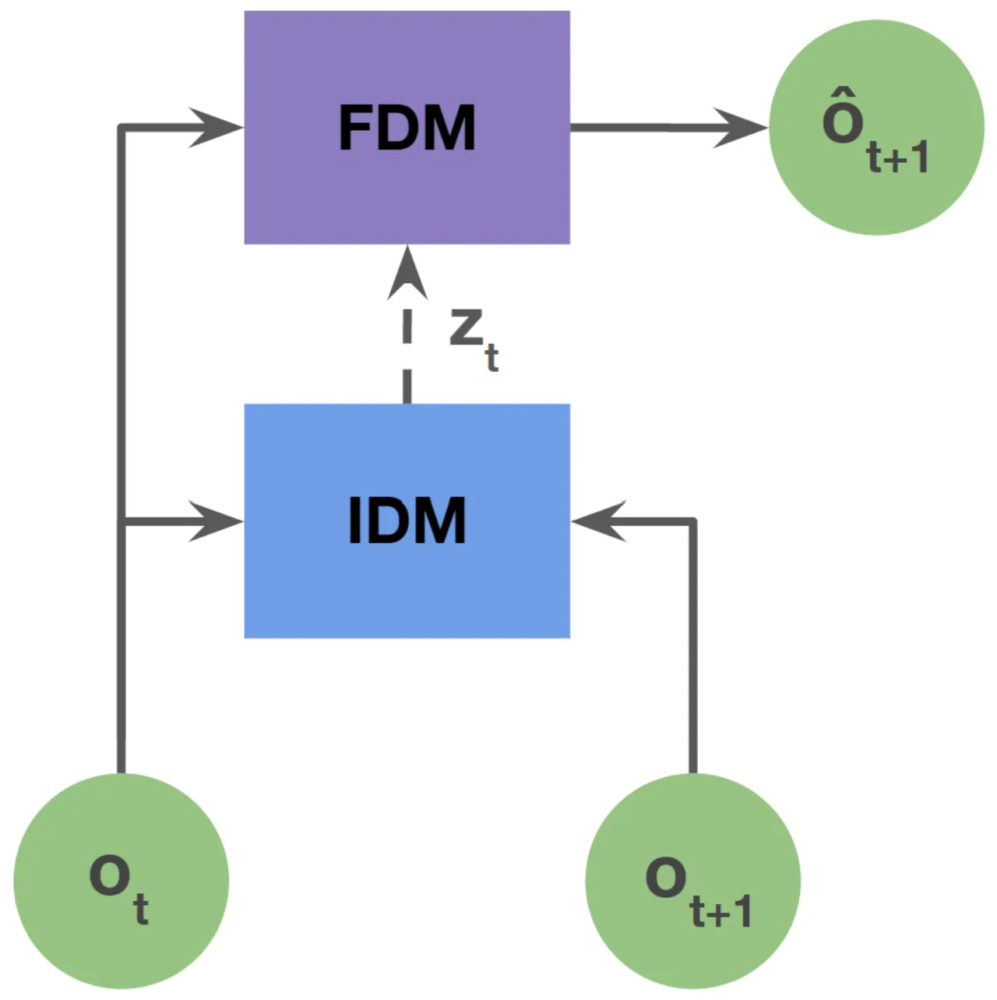
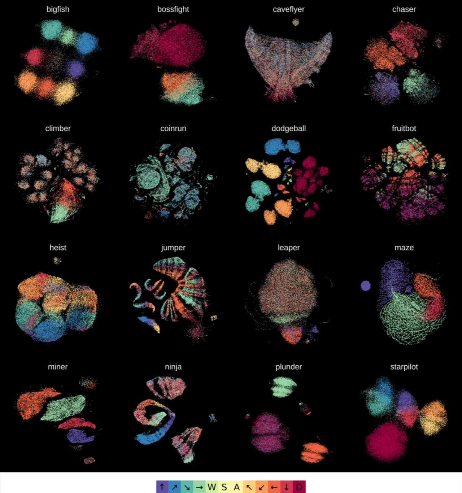
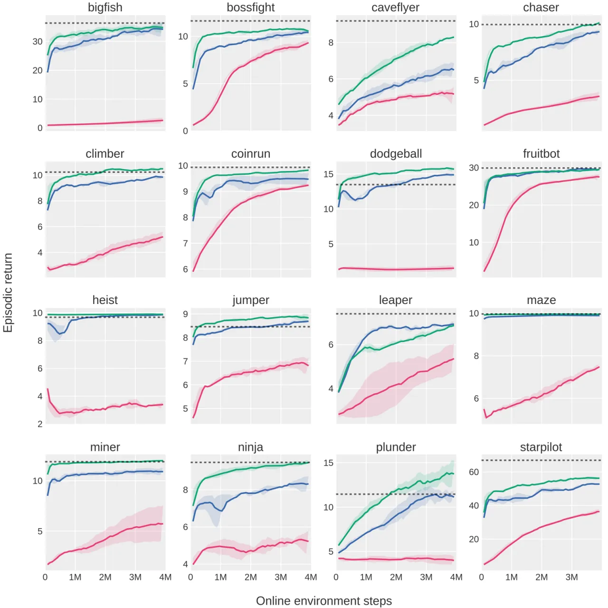
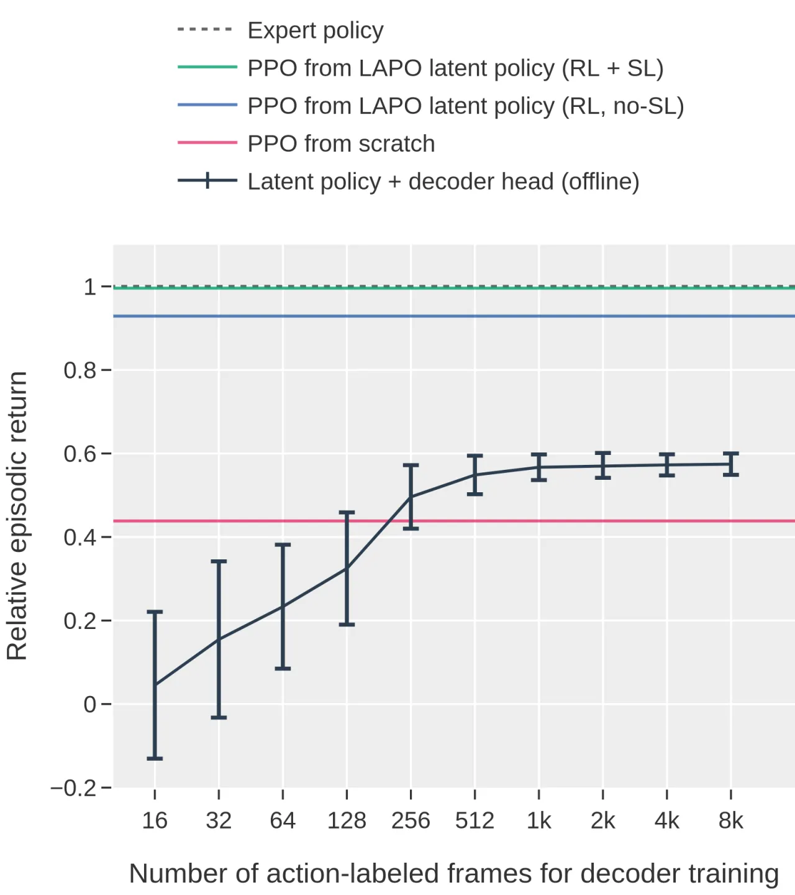

LAPO（Latent Action Policies）提出了一种仅靠视频观测序列学习行为策略的框架。通过联合训练逆向动态模型（IDM）与前向动态模型（FDM），并以 Vector Quantization（VQ）作为信息瓶颈，LAPO 可以从无标注视频中自动发现结构化的隐动作空间。学到的 latent policy 经过少量标注数据的解码器微调，便可在 Procgen 基准的 16 个游戏上快速达到甚至超越专家水平。
大语言模型通过在海量网络文本上预训练，获得了强大的通用能力。然而在强化学习领域，互联网上存在大量无标注的行为视频（游戏回放、操作演示等），却因为缺少动作标签而无法直接用于策略学习。如何从纯视频中提取行为信息，是通往具身 AI 大规模预训练的关键障碍。
"a first step towards pre-training powerful, generalist policies and world models on the vast amounts of videos readily available on the web"

LAPO 的核心是两个协同训练的动态模型：逆向动态模型（IDM）根据相邻两帧预测隐动作，前向动态模型（FDM）则仅凭当前帧和隐动作预测下一帧。两者共同以最小化下一状态预测误差为目标，而 Vector Quantization（VQ）瓶颈迫使 IDM 只编码状态差异而非完整的未来信息，从而学到真正具有动作语义的压缩表征。

IDM 以 (ot, ot+1) 为输入，输出连续的 latent action 向量，再经过 VQ 离散化。VQ 作为信息瓶颈的关键作用在于：若无约束，IDM 可以直接"抄写"未来帧信息绕过真正的动作推断；VQ 压缩迫使模型只保留状态转变中最关键的那部分信息，即 "the IDM learns to encode only the difference between ot+1 and ot…rather than full information about ot+1." 实验表明，去掉 VQ 后（no-VQ ablation）虽然 FDM loss 更低，但下游策略性能显著下降，印证了 VQ 的不可或缺性。
FDM 仅接收当前观测 ot 与 latent action，预测下一帧。训练完成后，IDM 的编码器部分即构成 latent policy——给定观测，输出 latent action。该 latent policy 可通过两种途径解码为真实可执行策略：

实验在 Procgen 基准的全部 16 个游戏上进行。无标注视频数据集包含约 8M 帧，由用 PPO 训练 50M 步后的专家策略采集。核心对比基线为 PPO from scratch 和 ILPO（另一种无动作标签方法）。

| 设置 | 基线 | LAPO | 备注 |
|---|---|---|---|
| 在线解码 @4M 帧 | PPO scratch: 44% expert | ≈100% expert | 16 games 均值 |
| 超越专家的游戏数 | — | 9 / 16 | 在 4M 帧内 |
| ILPO 对比 | ILPO 在多关卡任务崩溃 | LAPO 保持稳定 | 多关卡环境 |

两个关键消融证实了设计选择的重要性：
此外，UMAP 可视化显示，有 VQ 时 latent action 聚类更清晰，与真实动作对齐更好；无 VQ 时表征碎片化，难以解码为有效策略。
"Actions that have a delayed effect in observations will be predicted to take place with the same delay."——若某个动作在视觉上的效果延后若干帧才出现，IDM 学到的 latent action 会对应延迟后的可见变化，而非动作本身发生的时刻。作者指出可通过多时间步架构（multi-timestep architectures）加以缓解。
"Significant stochasticity can make it difficult for the IDM to compress the useful bits of information among the noise."——高随机性环境中，状态转变中的噪声与真实动作信号混杂，IDM 难以准确分离，导致 latent action 质量下降。更大的数据集可部分缓解此问题。
"Training on much larger datasets…would require scaling up the model architecture, which introduces new challenges in balancing the strength of the FDM and the capacity of latent actions representations."——在互联网规模视频数据上训练需要更大的模型，但 FDM 能力与 latent action 容量之间的平衡尚未得到充分研究，是迈向通用视频预训练策略的开放问题。
（从设计推断）实验表明，部分可观测性较低的环境中 latent action 聚类更清晰；对于完全可观测或高维观测的场景，IDM 可能更难学到紧凑的动作表征，泛化能力有待验证。